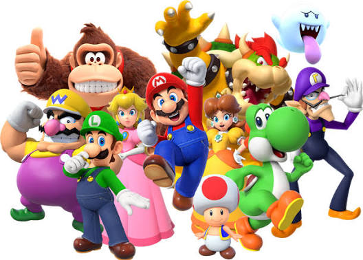

Videojuegos > Super Mario
Super Mario |
|
|
 |
Definición: Es una de las sagas más famosas de Nintendo, protagonizada por el fontanero Mario, que rescata a la princesa Peach de Bowser. Lo mejor del juego: Sus niveles de plataformas divertidos y fáciles de aprender, con música y personajes que todo el mundo reconoce. Personajes: Además de Mario y Peach, aparecen Luigi, Toad, Yoshi y el villano Bowser. Objetos: Los hongos, las flores de fuego y las estrellas le dan poderes a Mario. Curiosidad: Mario apareció por primera vez en 1981 y sigue siendo la mascota de Nintendo. |